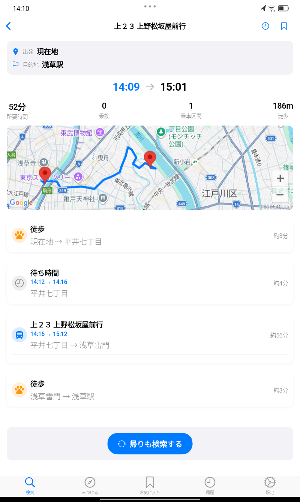
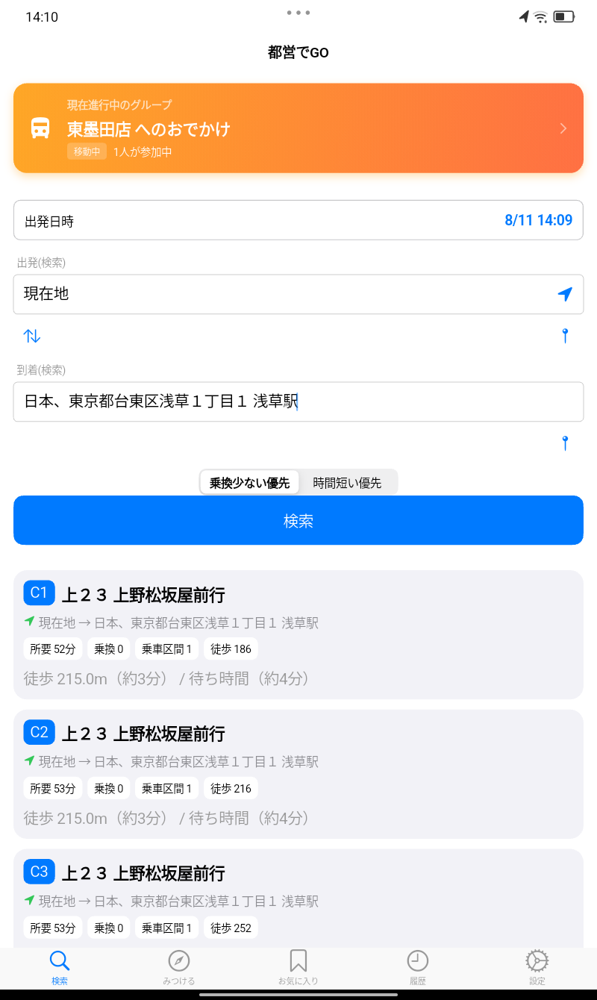
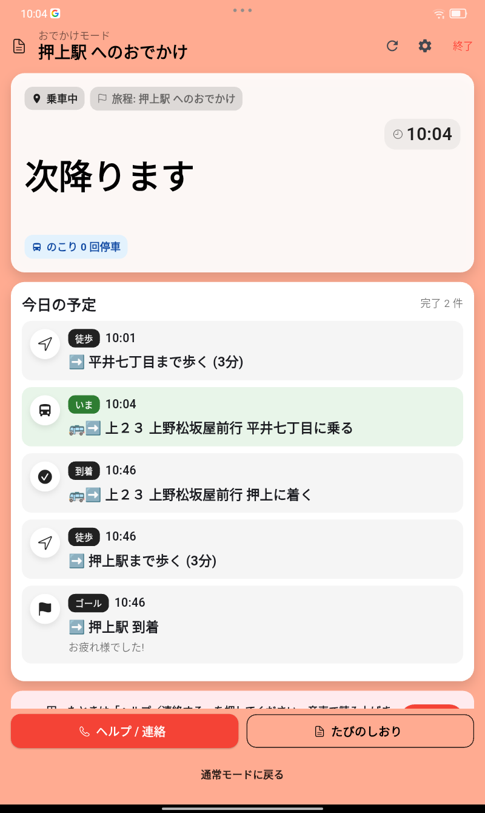
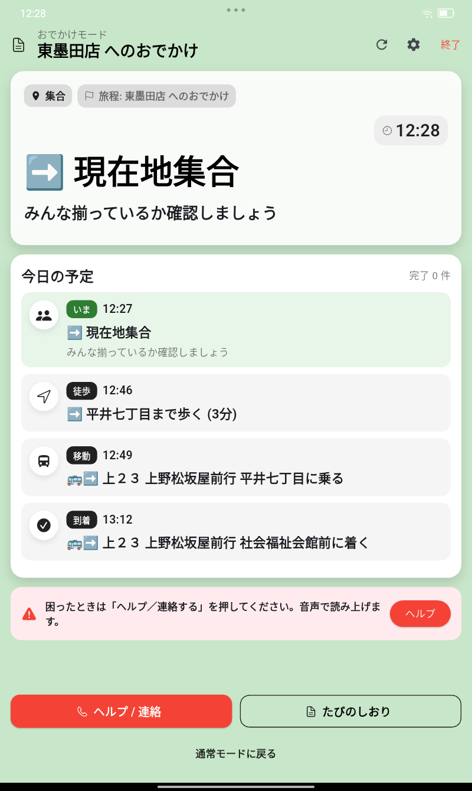
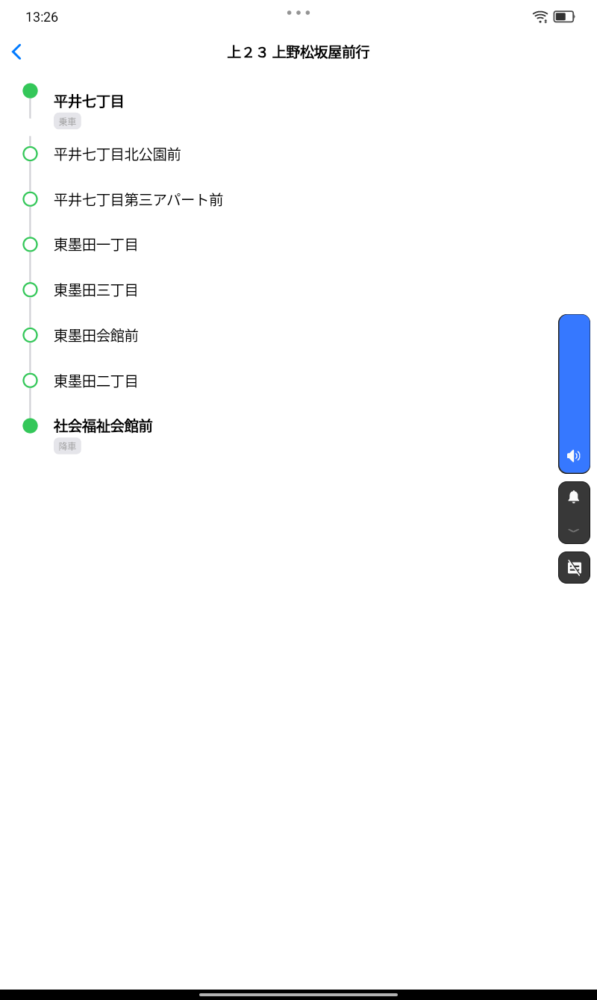
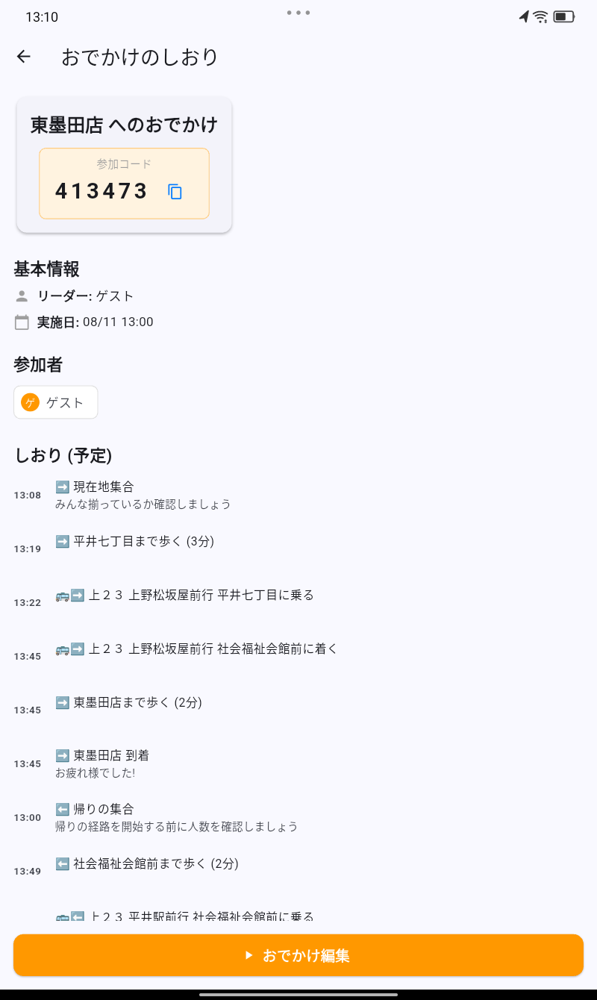
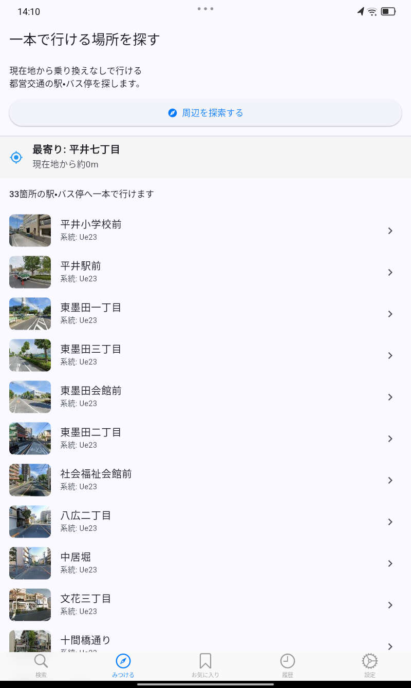
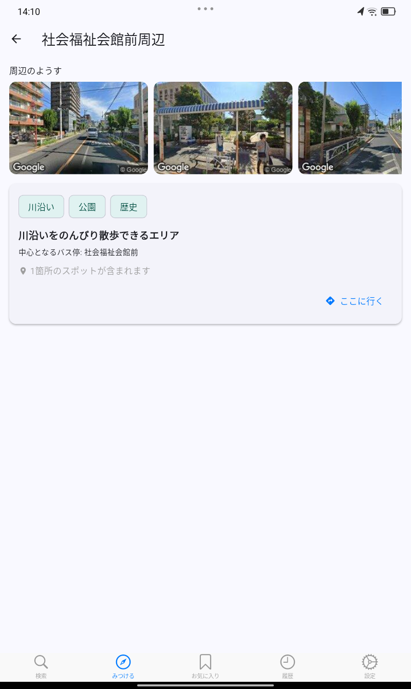
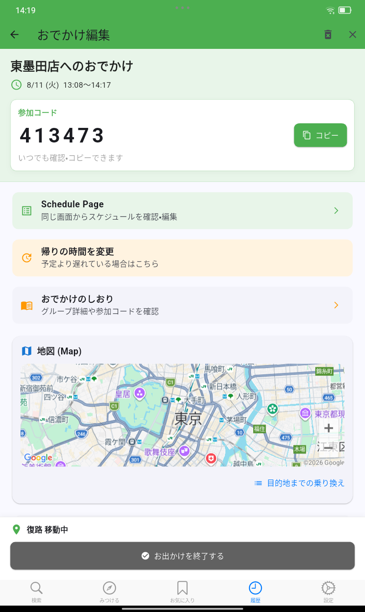
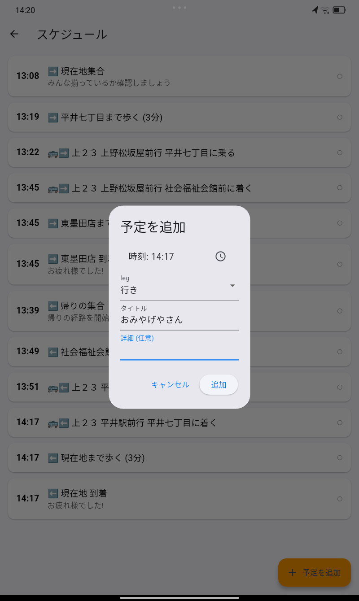

都営交通中心のルートを見つける
現在地や出発地から目的地までを検索。所要時間、乗換回数、徒歩距離、待ち時間、 乗車区間を見ながら、都営交通を中心としたルートを選べます。
ルート候補を比較
地図で確認
徒歩・待ち時間も表示

都営バス・都営地下鉄を中心に、JRや私鉄を使わないルートを探せるおでかけアプリ。 検索だけでなく、乗車中の案内、みんなでのおでかけ、近場の行き先探しまでサポートします。



検索から降車まで、おでかけの流れに沿って「次に何をするか」をわかりやすく表示します。
現在地や出発地から目的地までを検索。所要時間、乗換回数、徒歩距離、待ち時間、 乗車区間を見ながら、都営交通を中心としたルートを選べます。

乗車中は「あと何回停車」「次降ります」など、降りるタイミングがわかる表示に。 初めての場所でも、路線図と合わせて現在の区間を確認できます。

集合、徒歩、乗車、到着までを「今日の予定」として共有。 参加コード付きのしおりで、同行者と同じ行程を確認できます。 必要に応じて予定を追加したり、帰りの時間を調整したりできます。

「都営交通でどこへ行こう？」から探せる機能も用意しています。
現在地の近くから、乗り換えなしで行ける駅やバス停を一覧表示。 行き先を決めてから経路検索するだけでなく、行ける場所の中からおでかけ先を見つけられます。

駅やバス停の周辺写真や特徴を見ながら、気になる場所をチェック。 地図だけではわかりにくい「どんな場所？」をイメージしやすくします。

検索、乗車案内、おでかけの共有、行き先探しまで、一つのアプリでつながります。


いつもの移動にも、ちょっと知らない場所へのおでかけにも。 精神障害者都営交通乗車証や東京都シルバーパスなどを利用して、 都営交通で移動したい方にも使いやすいナビを目指しています。
JR・私鉄を使わない移動を考えたいときに。
乗車中に、次に何をするか確認したいときに。
集合から到着まで、同じ行程を見ながら動きたいときに。
本アプリは個人が開発・提供する非公式アプリです。 東京都、東京都交通局、東京都福祉局その他の行政機関を代表するものではなく、 これらの機関による承認、提携、運営を受けているものではありません。
制度の対象者、利用条件、利用可能な交通機関などは変更される場合があります。 精神障害者都営交通乗車証、東京都シルバーパス、都営交通無料乗車券などの 最新かつ正確な情報は、以下の公式情報をご確認ください。